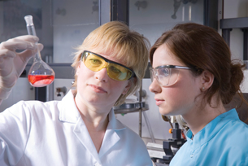

Module 7—Chemical Analysis
 Big Picture
Big Picture

Photo courtesy Kennedy Space Center/NASA
In Module 6 you explored one of the greatest achievements of humans—the ability to explore space. As you found in your study, successful space travel depends heavily on life-support systems. Many of these systems are developed using stoichiometric principles.
As you will see in this module, the careful planning and design of life-support systems must involve a knowledge of chemical systems and the quantities of substances involved.

© Alexander Raths/iStockphoto
Even if you are not planning to travel into space anytime soon, you may have concerns about the food space travellers eat or the environment in which they live. Quantitative techniques are used to monitor the nutritional content of foods and the concentration of toxic substances present in the environment.
In this module you will apply your knowledge of stoichiometry and explore how stoichiometry is used in the design and analysis of a variety of chemical systems.